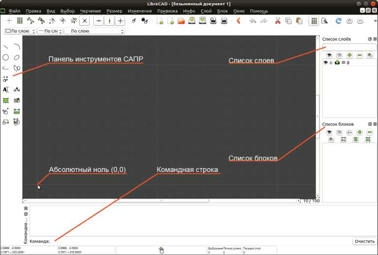
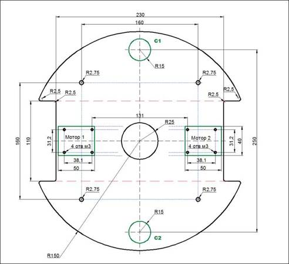
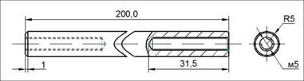
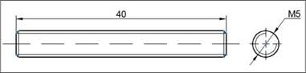
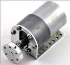
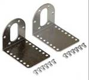
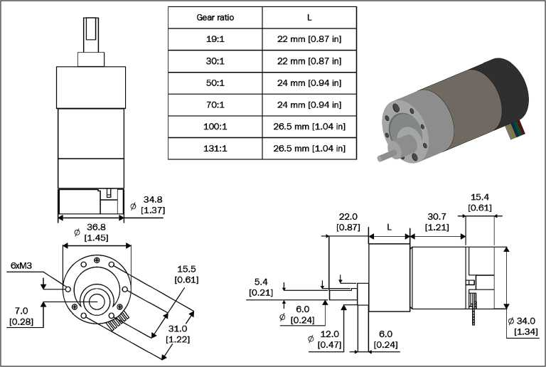
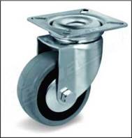
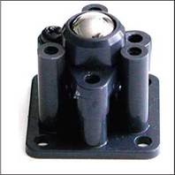
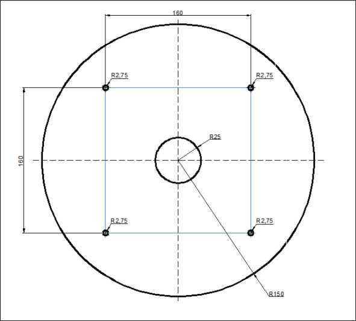

Глава
Моделирование робота с дифференциальным приводом
В этой главе мы рассмотрим модель робота с дифференциальным приводом и
создадим URDF-модель робота в ROS. URDF - это универсальный формат
XML-файла, используемый для описания всех элементов робота в ROS.
Устройство, которое мы собираемся построить, используется
в качестве робота-помощника в отелях и ресторанах и предназначено подавать еду
и напитки. Название такого робота - Chefbot.
В этой главе мы полностью смоделируем робот, познакомимся
с созданной с помощью системы CAD (САПР - системы автоматического
проектирования) конструкцией всех механических элементов и последовательностью
сборки. Кроме того, мы рассмотрим конструкцию этого устройства в 2D- и SD-проекциях
и создадим его модель в формате URDF.
В отелях работают роботы больших размеров. Мы же построим
робот для тестирования программного обеспечения. Поэтому он будет миниатюрным.
Если вы желаете построить его с нуля, т. е. от начала и до конца, значит, эта
глава для вас. Если же вы не желаете самостоятельно собирать робот из
отдельных деталей, воспользуйтесь роботизированной платформой, например
Turtlebot. Эта роботизированная платформа уже есть на рынке.
Прежде чем приступить к созданию робота, следует
определиться с техническим заданием. Затем можно начать его проектирование в
системе автоматического проектирования САПР (CAD). Сначала мы создадим
двухмерную модель (2D), которую впоследствии преобразуем в трехмерную (3D).
Трехмерная модель позволит более тщательно и детально проанализировать
конструкцию этого устройства. После того как SD-модель будет создана,
преобразуем ее в формат URDF. Это позволит смоделировать робот в ROS.
В этой главе мы рассмотрим следующие темы:
О проектирование
параметров робота в заданной спецификации;
О проектирование деталей
робота в 2D с использованием LibreCAD;
О проектирование SD-модели
робота с использованием Blender и Python;
О создание URDF-модели
Chefbot;
О визуализация
модели Chefbot в Rviz (ROS Visualizer).
Технические требования
Для тестирования приложения и кода нам понадобится PC/ноутбук с операционной
системой Ubuntu 16.04 LTS и установленной ROS Kinetic.
Требования к сервисному роботу
Прежде чем начать проектирование робототехнической системы, необходимо
определить технические требования к разрабатываемому роботу. Ниже представлен
список технических требований, предъявляемых к проектируемому устройству:
О робот должен иметь
устройство для переноски продуктов питания;
О робот должен перевозить
груз массой до 2 кг;
О скорость передвижения
должна быть в диапазоне от 0,25 до 0,35 м/с;
О дорожный просвет робота
должен быть не менее 3 см;
О робот должен непрерывно
работать в течение 2 ч;
О робот должен
уметь передвигаться, избегая препятствий, и подавать пищу на любой стол;
О высота робота должна быть
от 80 до 100 см;
О робот должен быть недорогим
(себестоимость не более $500).
Теперь, когда мы определились с техническими
требованиями, такими как вес полезной нагрузки, скорость передвижения, дорожный
просвет, высота и стоимость робота, можем приступать к его проектированию.
Сконструируем корпус и выберем соответствующие компоненты. Давайте обсудим,
какой механизм робота будет использован, чтобы устройство соответствовало
предъявляемым техническим требованиям.
Приводной механизм ходовой
части робота
Одной из наиболее экономически эффективных систем навигации мобильного
робота является система дифференциального привода. Это один из наиболее
простых механизмов привода, который используется в основном для перемещения
домашнего робота. Дифференциальный привод состоит из двух ведущих колес,
установленных на общей оси. Каждое ведущее колесо приводится в движение
отдельным двигателем. Для большей устойчивости и равномерного распределения
веса робот оснащен двумя опорными колесами.
Ниже показана типичная
схема системы дифференциального привода.
Дифференциальная
система привода
Далее определимся с механическими
компонентами дифференциальной системы привода: двигателями, колесами и шасси.
Учитывая технические требования, в первую очередь выберем двигатель.
Выбор двигателей и колес
Двигатели выбираются с учетом их технических характеристик. Наиболее
важные технические характеристики двигателя - число оборотов в минуту (RPM) и
крутящий момент. Эти значения определяются с помощью технических условий,
предъявляемых к проектируемому устройству.
Расчет оборотов двигателя
Согласно техническим требованиям скорость передвижения робота должна
находиться в диапазоне от 0,25 до 0,35 м/с. Учитывая, что значение дорожного
просвета должно быть не менее 3 см, выберем диаметр ведущего колеса, равный 9
см. В этом случае расстояние от поверхности до центра оси колеса составит 4,5
см, требование по дорожному просвету будет выполнено. Используя следующее
уравнение, рассчитаем количество оборотов колеса в минуту:
об/мин = (60 х Скорость)/(3,14 * Диаметр колеса);
.. (60 * 0,35) 21
об/мин = 3,14
* 0,09 = 0,2826 = 74 о6/мин'
Вы также можете использовать для расчетов следующую ссылку: http://www.robotshop. com/blog/en/vehicle-speed-rpm-and-wheel-diameterfinder-9786.
Для устройства, перемещающегося со скоростью
0,35 м/с, расчетное количество оборотов в минуту колеса диаметром 9 см (90 мм)
составляет 74. Применив округление, в качестве стандартной величины определим
значение, равное 80 об/мин. Учитывая, что колесо будет крепиться прямо на
ведущий вал двигателя, необходимо выбрать двигатель со встроенным редуктором и
количеством оборотов на ведущем валу, равным 80 об/мин.
Расчет
крутящего момента двигателя
Рассчитаем крутящий момент, необходимый для перемещения робота.
1. Количество колес - 4 (2 ведущих плюс 2 опорных колеса).
2. Количество моторов - 2.
3. Предполагаем, что коэффициент трения равен 0,6, а радиус колеса - 4,5
см (45 мм).
4. Определим полную массу робота = Масса робота + груз: = (Ж = mg) = (~100N + ~20N)W = ~150N, из
этого общая масса = 12 кг.
5. Нагрузка, действующая на четыре колеса, может быть записана как Ж = 2
хN1 + 2 хN2, где N1 - количество опорных колес и N2 -
количество ведущих колес.
6. Предположим, что робот находится в неподвижном состоянии. Максимальный
крутящий момент требуется в начале движения робота, т. к. ему необходимо
преодолеть силу трения.
7. В момент начала движения момент импульса и сила трения уравновешивают
друг друга. Зная силу трения, мы получим максимальное значение крутящего
момента (момент импульса):
О р х Nх r - T =
0, где р - коэффициент трения, N - средний вес, действующий на
каждое колесо, r - радиус колеса, T - крутящий момент;
О N = Ж/2
(в роботе ведущими являются только 2 колеса, поэтому для вычисления
максимального крутящего момента мы берем Ж/2). В
результате получаем: 0,6 х (120/2) х 0,045 - Т = 0;
О Следовательно, Т = 1,62 Н/м, или 16,51 кг/см.
Результаты проектирования
После проектирования полученные значения округлим до стандартных и подберем
комплектующие из доступной спецификации:
О количество
оборотов двигателя = 80 об/мин (приведено к стандартному значению);
О крутящий
момент двигателя = 18,0 кг/см (приведено к стандартному значению);
О диаметр колеса
= 9 см (90 мм).
Конструкция шасси робота
После расчетов параметров двигателей и колес
робота можем спроектировать его шасси. Согласно техническому заданию на шасси
робота необходимо смонтировать подставку для доставки
еды, выдерживающую до 2 кг полезной нагрузки. Дорожный просвет робота должен
составлять не менее 3 см (30 мм). Себестоимость робота должна быть минимальной.
Помимо этого, в роботе необходимо предусмотреть место для размещения
электронных компонентов, таких как персональный компьютер (ПК), датчики и
батарея.
Одной из самых простых и удовлетворяющих требованиям
технического задания (ТЗ) конструкций является многоуровневая конструкция,
например TurtleBot 2 (робот-черепаха) (http://www.turtLebot.com/)
с шасси, состоящим из трех полок - уровней. В качестве ходовой части TurtleBot
используется роботизированная платформа Kobuki (http://kobuki.yujinrobot.com/about2/). Она оснащена
встроенными моторами и датчиками, поэтому нет необходимости дополнительно
разрабатывать ходовую часть робота.
На следующем рисунке показана конструкция
шасси робота TurtleBot 2:

Робот TurtleBot 2 (http://robots.ros.org/turtLebot/)
Мы конструируем робот, ориентируясь на конструкцию TurtleBot
2. Ходовую часть робота разработаем самостоятельно. Наша конструкция также
будет трехуровневой. Прежде чем начинать проектирование, следует определиться с
необходимым программным обеспечением.
Для разработки конструкции
робота понадобится система автоматического проектирования САПР, или CAD
(computer-aided design/drafting - система автоматизированного
проектирования и создания чертежей). Ниже приведен список наиболее популярных
систем автоматического проектирования:
О SolidWorks (http://www.soLidworks.com/defauLt.htm);
О AutoCAD (http://www.autodesk.com/products/autocad/overview);
О Maya (http://www.autodesk.com/products/maya/overview);
О Inventor (http://www.autodesk.com/products/inventor/overview);
О Google
SketchUp (http://www.sketchup.com/);
О Blender (http://www.bLender.org/downLoad/);
О LibreCAD (http://Librecad.org/cms/home.htmL).
Конструировать шасси можно в
любой удобной для вас системе автоматического проектирования. В этой книге для
разработки чертежей и двухмерной модели робота воспользуемся программой
LibreCAD. Трехмерное моделирование выполним в программе Blender. Эти программы
бесплатны и работают во всех операционных системах. Для просмотра и контроля
создаваемой SD-модели воспользуемся программой MeshLab. Linux Ubuntu будет
основной операционной системой. Также мы рассмотрим, как установить нужные нам
приложения в Linux Ubuntu 16.04, и предоставим ссылки на инструкции по
установке этих приложений в других операционных системах.
Установка LibreCAD, Blender и MeshLab
LibreCad - это бесплатная, с
открытым исходным кодом система автоматического проектирования (САПР) для
двухмерного (2D) черчения и проектирования. Работает с операционными системами
Windows, OS X и Linux. Распространяется под лицензией GNU General Public
License версии 2. Blender - это бесплатная, с открытым исходным кодом
программа для создания трехмерной компьютерной графики со средствами
моделирования, анимации, рендеринга, постобработки, монтажа видео и звука и
создания интерактивных игр. Приложение распространяется с лицензией GPL,
благодаря чему пользователи могут обмениваться программой, изменять и
распространять ее. MeshLab - редактор с открытым исходным кодом,
предназначенный для обработки неструктурированных SD-моделей.
Ниже приведены ссылки для скачивания и
установки в Windows, Linux и OS Х:
О зайдите
по http://wiki.Librecad.org/index.php/DownLoad
для скачивания Lib- reCAD;
О зайдите по https://Launchpad.net/~Librecad-dev для скачивания и установки LibreCAD на
Debian/Ubuntu;
О зайдите по https://apps.fedoraproject.org/packages/Librecad для
скачивания и установки LibreCAD на Fedora;
О зайдите по https://sourceforge.net/projects/librecad/files/OSX/ для скачивания и установки LibreCAD на OS
X;
О зайдите по https://sourceforge.net/projects/librecad/files/Windows/ для скачивания и установки LibreCAD на Windows;
О зайдите
по https://github.com/LibreCAD/LibreCAD/releases для разработки и тестирования.
Установка
LibreCAD
Следуйте стандартной процедуре установки для всех операционных систем.
Если у вас операционная система Ubuntu, можете установить LibreCAD с помощью
центра приложений Ubuntu.
Также для установки LibreCAD в Linux Ubuntu
можно воспользоваться следующими командами:
$ sudo
add-apt-repository ppa:librecad-dev/librecad-stable
$ sudo
apt-get update
$ sudo apt-get install librecad
Если после запуска Терминала вы ввели команду
sudo su и прошли авторизацию, то больше команду sudo вводить не надо.
Установка
Blender
Для загрузки версии Blender, соответствующей вашей операционной
системе, посетите страницу, расположенную по адресу: http://www.blender.org/download/.
Здесь вы можете найти последнюю версию Blender. Актуальная документация по
Blender находится здесь: https://docs.blender.org/manual/ru/dev/. Если у вас
установлена операционная система Linux Ubuntu, то Blender устанавливается с
помощью менеджера пакетов Synaptic или команды:
$ sudo apt-get install blender
Установка
MeshLab
Редактор MeshLab доступен для всех операционных систем.
Чтобы скачать программу и исходный код MeshLab, перейдите по ссылке: http://meshlab. sourceforge.net/.
Если у вас установлена Linux Ubuntu, MeshLab
можно установить через менеджер пакетов Synaptic или с помощью следующей
команды:
$sudo apt-get install meshlab
Когда программы будут установлены, закройте
Терминал, два раза введя команду Exit.
Создание 2D CAD-чертежа робота с
помощью LibreCAD
Познакомимся с базовым интерфейсом LibreCAD. Ниже
показано окно этой программы:
Рабочее окно программы LibreCAD
Ниже
показана панель инструментов САПР, с помощью которых и будут создаваться
чертежи:

Панель инструментов LibreCAD
Подробное описание инструментов LibreCAD
доступно по ссылке: http://wiki. Librecad.org/index.php/LibreCAD_users_ManuaL.
О Командный блок. Он включает в себя командную строку, в которую вводятся команды, и
поле, в котором отображается история введенных ранее команд. С помощью команд
можно создавать чертежи без использования панели инструментов САПР.
Чтобы построить прямоугольник размером 40 * 30
с координатами начальной точки в левом нижнем углу x = 10; у =
20, щелкните мышью на командной строке и в зависимости от языка интерфейса
последовательно введите команды: line
(линия), Enter; 10,20, Enter; 50,20,
Enter; 50,50, Enter; 10,50,
Enter; 10,20, Enter; 2 раза нажмите Esc. Прямоугольник построен. Подробные
инструкции об использовании командной строки можно прочитать, перейдя по
адресу: http://wiki.Librecad.org/index.php/A_ short_manuaL_for_use_from_the_command_Line.
О Список слоев. Каждый чертеж состоит из нескольких слоев. Например, на одном слое
чертится основной чертеж, на другом наносятся размеры с размерными линиями, на
третьем - текст и т. д. Стиль, толщину, цвет и т. д. для каждого слоя можно
назначить индивидуально. Использование нескольких слоев при создании чертежа -
это основная концепция всех САПР. Подробнее об использовании слоев можно
прочитать здесь: http://wiki.Librecad.org/index.php/Layers.
О Блок - это группа примитивов, которые могут быть несколько раз вставлены
в один и тот же чертеж в разных местах и с различными характеристиками (разным
масштабом и углом поворота). Подробнее описание блоков можно прочитать,
перейдя по следующей ссылке: http://wiki. Librecad.org/index.php/BLocks.
О Абсолютный ноль - это
начало координат, на рисунке (0, 0).
Итак, начнем чертить. Для этого
воспользуемся блоком для черчения. Сначала выберем единицы измерения. В
технике используются миллиметры, в строительстве - сантиметры. Назначим
единицей измерения миллиметр. Для этого после запуска программы LibreCAD следует
выбрать команду меню Правка ^ Настройки
программы, в появившемся окне Настройки программы открыть
вкладку Умолчания и выбрать нужную размерность из открывающегося списка
Единица измерения.

Вкладка Умолчания окна Настройки программы
Механическая часть робота состоит из трех
плит: нижней опорной плиты, или основания конструкции, средней и верхней плит.
Плиты соединены друг с другом через опорные стойки, по 4 стойки на ярус. К
нижней стороне опорной плиты крепятся 2 кронштейна для моторов и 2 опорных
колеса. С верхней стороны устанавливаются аккумулятор и панель управления.
Начнем конструирование робота с опорной плиты.
Конструкция опорной плиты робота
Ниже представлен чертеж опорной плиты робота.
Плита изготавливается из алюминиевого листа марки АТ (алюминий твердый)
толщиной 5 мм. Все размеры, как линейные, так и радиусные, базируются от
центра опорной плиты. Как уже упоминалось выше, двигатели для вращения колес
крепятся к нижней стороне плиты с помощью двух кронштейнов, конструкция
которых будет представлена ниже. Эти двигатели обозначены на чертеже двумя
прямоугольниками темно-зеленого цвета и именуются Мотор 1 и Мотор 2. Для
крепления каждого кронштейна предусмотрено по 4 отверстия с резьбой М3.
Нестандартные расстояния между отверстиями крепления кронштейна (с десятичными
значениями) объясняются тем, что эти кронштейны разрабатывались в дюймах (1
дюйм равен 25,4 мм).

Чертеж опорной плиты робота
Под прямым углом к воображаемой оси ведущих колес,
спереди и сзади платформы, установлены 2 опорных колеса С1 и С2. Расстояние от
центра основания до центра опорного колеса составляет 125 мм. Отверстия для крепления
опорных колес не обозначены, т. к. это зависит от конструкции узла. Опорное
колесо может крепиться с помощью болта (в этом случае в центре, предусмотренном
для крепления колеса, придется сверлить отверстие диаметром немного больше
диаметра крепежного болта). Также опорное колесо может иметь опорную площадку.
В этом случае согласно характеристикам этого узла придется предусмотреть 4
резьбовых отверстия для каждого опорного колеса. Кроме того, с учетом характеристик
приобретенного узла (общей высоты) необходимо будет сделать прокладки,
компенсирующие разницу дорожного просвета робота и фактической общей высоты
поворотного узла. Об опорных колесах мы еще поговорим.
С другой стороны опорной плиты установлены 4
стойки, на которые устанавливается средняя плита. Для крепления этих стоек
предусмотрены 4 сквозных отверстия диаметром 5,5 мм. В конструкции для
крепления стоек используются винты М5 х 25. В центре плиты просверлено
отверстие диаметром 50 мм, через которое будут выведены провода от двигателей.
На левой и правой сторонах плиты предусмотрены 2 выреза под ведущие колеса.
Радиусы в углах вырезов - технологические, зависящие от диаметра фрезы,
которой эти вырезы будут фрезероваться. Радиусы на соединении выреза под колесо
и внешнего диаметра плиты предусмотрены, чтобы не было острых углов. Эти углы
можно закруглить напильником.
Конструкция
нижней и верхней стоек
Как уже упоминалось ранее, средняя плита с опорной плитой соединяется с
помощью четырех стоек. Таким же способом мы соединим среднюю и верхнюю плиты.
Таким образом, будет собран пакет из опорной, средней и верхней плит со
стойками между ними. Мы предлагаем изготовить стойки из стандартного
алюминиевого прута (алюминий марки АТ) диаметром 10 мм. Длина нижних стоек,
соединяющих основание со средней плитой, равна 150 мм. Длина верхних стоек,
устанавливаемых между средней и верхней плитой, - 200 мм. В торцах каждой
стойки следует сделать глухие резьбовые отверстия М5 глубиной 25-30 мм. Нижние
и верхние стойки (и средняя плита между ними) соединяются с помощью четырех
стальных резьбовых стоек М5 х 40. Их можно изготовить из стандартных винтов М6
х 50. Для этого нужно отпилить шляпки винтов и обработать срезы напильником.
Ниже приведен чертеж верхней и нижней стоек и резьбовой шпильки.
Впрочем, стойки можно
изготовить из трубки диаметром 10 мм. Но в этом случае понадобятся 4 длинные
шпильки диаметром 6 мм и длиной 370 мм с резьбой М5 х 10 на ее концах (длина
шпильки рассчитывалась с учетом высоты всего пакета и запаса под гайки) и
гайки.
Чертеж нижней стойки
Конструкция
колеса и крепления для колеса и мотора
Двигатель, кронштейн и колесо - это комплектующие, которые
необходимо приобрести. Заказать их можно на сайте www.pololu.com.
Ниже показаны фотографии двигателя в сборке с кронштейном, кронштейна, колеса,
установленного на валу двигателя, и самого колеса.
|
|
|
|
|
 |
|
|
|
|
|
 |
|
|
|
При расчете количества оборотов и крутящего момента
двигателя мы приняли, что диаметр колеса равен 90 мм. Ниже приводятся габаритный
чертеж двигателя и таблица с передаточными числами и размерами редукторов, которыми
может быть укомплектован двигатель.
Напомним полученные ранее расчетные значения для
применяемого в конструкции двигателя:
О количество оборотов = 80
об/мин (приведено к стандартному значению);
О крутящий момент = 18,0
кг/см (приведено к стандартному значению);
О диаметр колеса
= 90 мм.

Чертеж двигателя для робота
Конструкция может варьироваться в зависимости от того,
какой двигатель будет выбран. Главные требования к выбору двигателя заключаются
в том, чтобы его крутящий момент был не меньше расчетного и количество
оборотов на ведущем валу тоже приближалось к расчетному. При моделировании мы
протестируем, подходит ли этот двигатель к данной конструкции или нужно
подбирать другой. Кроме вышеперечисленных характеристик, очень большое значение
имеют такие характеристики, как габариты двигателя, способ его крепления и
крепежные размеры. В левом нижнем углу рисунка вы увидите крепежные размеры
выбранного двигателя. В правом верхнем углу рисунка находится таблица с
характеристиками редуктора, которым может быть оснащен двигатель. В левой
колонке Gear ratio (передаточное число) показаны передаточные числа редукторов.
В зависимости от передаточного числа меняется и размер самого узла. На чертеже
двигателя и в таблице длина редуктора обозначена латинской буквой L.
Двигатель, примененный в конструкции, вы можете заказать,
зайдя по адресу: https://www.poLolu.com/product/2827.
На следующем рисунке
показано стандартное колесо диаметром 90 мм, которое предлагается использовать
в конструкции. Колесо имеет 6 дополнительных монтажных отверстий для крепления
универсальных ступиц. Колеса продаются парами. Ознакомиться и заказать пару
колес можно по адресу: https:// www.pololu.com/product/1437.
Чертеж колеса для робота
Двигатели устанавливаются на нижней стороне
опорной плиты робота с помощью кронштейнов. На следующем рисунке показан
чертеж такого кронштейна. Это тоже покупное изделие, и заказать его можно на
странице, расположенной по адресу: https://www.pololu.com/product/1084.

Типичная конструкция кронштейна робота
Конструкция
опорного колеса
Следующее покупное изделие - это опорные колеса.
Опорные колеса могут быть разных конструкций: поворотное колесо со смещенной
осью или устройство с опорным шариком (шариковая опора). Устройство с опорным
шариком по конструкции похоже на пишущий узел шариковой авторучки. Во всех опорных
колесах, кроме грузоподъемности, важным параметром является его высота. Каждый
узел имеет свои плюсы и минусы. Шариковое опорное колесо хорошо работает только
на ровной поверхности. Если на полу будет лежать, например, ковер, для робота
с шариковыми опорами это будет непреодолимым препятствием. А обычное поворотное
колесо на крутой разворот робота может среагировать с небольшой задержкой, но
хорошо проходит препятствия в виде трещин на полу или ковра. Конструкция
двигателя и кронштейна позволяет выбрать необходимый дорожный просвет. Ведущий
вал двигателя смещен на 6,86 мм (можно округлить до 7 мм) по отношению к центру
двигателя. Поэтому с учетом конструкции двигателя, кронштейна и размера колеса
существуют два варианта установки двигателя на кронштейне. Если установить
двигатель
ведущим валом ближе к нижней плоскости опорной плиты,
расстояние от низа опорной плиты до поверхности, по которой робот будет
передвигаться, составляет 59 мм. Если же двигатель установить ведущим валом
ближе к полу, расстояние от пола до нижней плоскости опорной плиты составит
62,5 мм. Вариант установки двигателя зависит от условий, в которых будет
работать устройство, и от применяемых опорных колес. Если поверхность, по
которой предстоит передвигаться роботу, будет ровной, дорожный просвет лучше
уменьшить и применить шариковые опоры. Коллекцию шариковых опор мы можем
найти, перейдя по ссылке: http://www.poLoLu.com/category/45/poLoLu-baLL-casters.
Если же на поверхности будут
препятствия, лучше применить поворотное колесо, например такое, как показано на
рисунке. Высота этого узла - 59 мм, диаметр/ширина колеса - 40/18 мм, смещение
оси - 24 мм, размер платформы - 42 х 42 мм, межцентровое расстояние
крепежных отверстий - 31 * 31 мм. Ниже приведена ссылка, по которой это колесо
можно найти в интернете: https://steLLa-tech.ru/cataLog/koLesa/proizvedeno-v-itaLii/apparatnyie-koLesa/37- seriya/koLesa-apparatnye-37/povorotnoe-pod-4-boLta-37/koLeso-seroe-374100/.
Шариковая опора, показанная на правом рисунке, имеет
максимальную высоту 35 мм. Таким образом, при дорожном просвете 59 мм
устанавливать колесо придется через прокладку толщиной 24 мм. Данную шариковую
опору можно купить, зайдя на страницу по адресу: https://www.poLoLu.com/product/66.
Конструкция
средней плиты
Внешний диаметр средней плиты равен внешнему
диаметру опорной плиты робота. Остаются на своих местах центральное отверстие
под провода и крепежные отверстия. Толщина плиты - 2 мм. Она соединяется с
опорной и верх
ней плитами посредством стоек, чертежи которых были
приведены выше. В стойки со стороны средней плиты вворачиваются стальные
шпильки (чертеж шпильки приведен выше), дальше на них через крепежные
отверстия насаживается средняя плита и зажимается верхними стойками, которые
наворачиваются на шпильки. Среднюю плиту предлагаем изготовить из твердого
листового алюминия марки АТ.

Чертеж средней плиты
Конструкция верхней плиты
Конструктивно верхняя плита похожа на среднюю
плиту. Только отсутствует центральное отверстие. Крепится верхняя плита к
стойкам винтами М5 * 15 через крепежные отверстия. Если с верхней стороны плиты
крепежные отверстия зенкеровать, можно применить винты с потайной головкой. В
этом случае шляпки винтов не будут выступать над поверхностью плиты, благодаря
чему она будет ровной, без выступов.

Чертеж верхней плиты
Итак, чертежи всех механических деталей
робота созданы. Теперь нам ничего не мешает с помощью программы Blender
создать 30-модель нашего робота. Трехмерная модель будет создана из двухмерных
чертежей, необходимых для изготовления деталей на производстве.
Работа с SD-моделью робота с
использованием Blender
В этом разделе мы создадим 30-модель робота. В основном она будет
использоваться для моделирования устройства с помощью программы Blender. Версии
данной программы должны быть не меньше чем 2.6, т. к. все чертежи были
проверены на них.
На показанном ниже снимке
экрана вы увидите окно этой программы с рабочей областью и инструментами,
предназначенными для работы с 30-моделями:

Окно программы Blender
Основная причина использования Blender заключается в том,
что мы можем создать модель робота, написав скрипты (программы) на языке
программирования Python. Blender имеет встроенный интерпретатор Python и
текстовый редактор Python для программирования. Мы не будем рассматривать
пользовательский интерфейс Blender. Хороший учебник по Blender можно найти на
официальном сайте. Чтобы подробнее узнать о пользовательском интерфейсе
программы, перейдите по ссылке: http://www.blender.org/support/tutorials/.
Русскоязычный читатель может
воспользоваться следующей ссылкой: http:// blender3d.org.ua/book.
А теперь настало время программировать в
Blender с помощью Python.
Скрипты Python в Blender
В основном Blender написан на языках C, C++ и
Python. Пользователи могут писать свои собственные скрипты на Python и
получить доступ ко всем функциональным возможностям Blender. Если вы хорошо
знакомы с Blender API Python, то можете вместо ручного моделирования создать
модель робота с помощью скриптов Python.
Blender использует Python 3.х. Хоть
Python API в целом стабилен, он до сих пор частично перерабатывается и
улучшается. Документация по Blender API Python находится по адресу: http://www.blender.org/documentation/blender_ python_api_2_69_7/.
Кратко рассмотрим интерфейсы Blender Python
API Blender, которые будут использованы при создании модели робота.
Введение
в API Blender Python
API Python в Blender может использовать большинство функций Blender.
Ниже перечислены основные задачи, которые может выполнять API:
О редактирование
внутри Blender любых данных, таких как сцены, сетки, точки и т. д.;
О изменение
настроек пользователя, горячих клавиш и тем интерфейса Blender;
О создание новых инструментов
Blender;
О рисование
SD-изображения с помощью имеющихся в Python команд OpenGL.
Blender предоставляет интерпретатору Python модуль bpy.
Этот модуль может импортироваться в скрипт и предоставлять доступ к данным,
классам и функциям Blender. Его модуль нужно импортировать скриптам, которые работают
с данными Blender. Ниже приведен список основных модулей Python, которые мы
будем использовать в bpy:
О контекстный доступ. Скрипт bpy.context
- обеспечение доступа к функциям пользовательского
интерфейса Blender;
О доступ к данным. Скрипт bpy.data
- обеспечение доступа к внутренним данным Blender;
О операторы.
Скрипт bpy.ops
- обеспечение доступа Python к вызывающим операторам,
включая написанные на C, Python или макросы.
Для написания скрипта в
Blender необходимо открыть вкладку Scripting. Для этого щелкните мышью
на кнопке в левой части открывающегося списка выбора готовых рабочих
пространств и выберите строку scripting. Вид рабочего окна программы
изменится, появятся текстовый редактор и консольное окно Python в Blender.

Выбор рабочего пространства Scripting

Вкладка Scripting открыта
Как уже говорилось ранее, после выбора
вкладки Scripting мы увидим текстовый редактор и консольное окно Python
в Blender. В текстовом редакторе мы можем писать коды с помощью API Blender, а
также проверять команды Python через консоль.
Создайте новый скрипт на
Python и назовите его robot.py. Для этого нажмите в нижней части текстового редактора кнопку New (Создать),
введите в поле ввода, расположенное правее кнопки New, имя скрипта robot.py и нажмите клавишу Enter. Скрипт создан. Теперь данный скрипт
нужно сохранить. Выберите команду меню File ^ Save As (Сохранить как), папку сохранения,
введите имя, под которым файл будет сохранен, и нажмите кнопку Save As
Blender File (Сохранить как файл Blender). Теперь, используя только
Python-скрипты, мы будем создавать 3П-модель робота. Следующий раздел содержит
полный скрипт для создания такой модели. Перед запуском желательно изучить код.
Мы надеемся, что вы прочитали инструкции по API Python Blender на официальном
сайте. Код в следующем разделе разделен на 6 Python-функций. Это сделано для
того, чтобы нарисовать 3 плиты робота, двигатели, колеса и сделать 4 стойки.
После запуска мы экспортируем скрипт в формат STereoLithography (STL) -
3П-формат файла для моделирования.
Скрипт Python модели робота
Ниже приведен скрипт Python разрабатываемой нами модели
робота. Знак решетки #
обозначает, что отмеченная этим знаком строка является
комментарием и в выполнении скрипта участия не принимает. Строка из множества
значков ####### служит для визуального разделения кода на разделы и больше никакой
смысловой нагрузки не несет. Данные строки, как и строки с комментариями,
можно и не вводить. Это не повлияет на работу скрипта.
1. Перед запуском скрипта Python в Blender необходимо импортировать модуль
bpy. Модуль bpy
содержит все функциональные возможности Blender и получает
доступ в самом приложении Blender. Щелкните мышью в окне текстового редактора и
введите с клавиатуры первую команду:
import bpy
2. Следующая функция предназначена для создания опорной плиты робота. С
ее помощью будет нарисован цилиндр радиусом 15 см:
#Создание опорной плиты:
def
Draw_Base_Plate():
####################################################
bpy.ops.mesh.prinitive_cylinder_add(radius=0.15,
depth=0.005, location=(0,0,0.09))
# Изменение рабочего
пространства
bpy.ops.object.select_pattern(pattern="Cube")
bpy.data.objects['Cylinder'].select = False
bpy.ops.object.delete(use_global=False)
3.
С помощью следующей функции мы нарисуем моторы и
колеса, установленные на опорной плите:
#Функция для создания
двигателей и колес def Draw_Motors_Wheels():
4. Показанные ниже команды нарисуют цилиндр радиусом 0,045 и толщиной
0,01 м. Этот цилиндр будет обозначать колесо. После создания колесо будет
перемещено на свое место:
#Создать первое колесо
bpy.ops.mesh.primitive_cylinder_add(radius=0.045, depth=0.01,
location=(0,0,0.07)) #Поворот bpy.context.object.rotation_euler[1] = 1.5708
Перемещение bpy.context.object.location[0] = 0.135
#Создать второе колесо
bpy.ops.mesh.primitive_cylinder_add(radius=0.045, depth=0.01,
location=(0,0,0.07)) #Поворот bpy.context.object.rotation_euler[1] = 1.5708
Перемещение bpy.context.object.location[0] = -0.135
5. Следующие команды добавят к опорной плите 2 макета двигателей. Размеры
двигателей указаны в 2П-чертеже опорной плиты. Модель мотора будет выполнена в
виде цилиндра, который после поворота соединится с опорной плитой:
# Добавление двигателей bpy.ops.mesh.primitive_cylinder_add(radius=0.018,
depth=0.06, location=(0.075,0,0.075)) bpy.context.object.rotation_euler[1] =
1.5708 bpy.ops.mesh.primitive_cylinder_add(radius=0.018, depth=0.06,
location=(-0.075,0,0.075)) bpy.context.object.rotation_euler[1] = 1.5708
6. Чтобы модели двигателей были похожи на моторы, добавим валы. Вал будет
выглядеть как соединенный с двигателем цилиндр:
bpy.ops.mesh.primitive_cylinder_add(radius=0.006,
depth=0.04, location=(0.12,0,0.075))
bpy.context.object.rotation_euler[1]
= 1.5708 bpy.ops.mesh.primitive_cylinder_add(radius=0.006, depth=0.04,
location=(-0.12,0,0.075))
bpy.context.object.rotation_euler[1]
= 1.5708 #######################################################
7. Добавим к основанию 2 опорных колеса и изобразим их в виде 2 цилиндров:
#Добавление
опорного колеса bpy.ops.mesh.primitive_cylinder_add(radius=0.015, depth=0.05,
location=(0,0.125,0.065))
bpy.ops.mesh.primitive_cylinder_add(radius=0.015,
depth=0.05, location=(0,-0.125,0.065))
8.
Следующая команда добавит макет датчика Kinect:
#Добавление Kinect
bpy.ops.mesh.primitive_cube_add(radius=0.04,
location=(0,0,0.26))
9.
Теперь нарисуем среднюю плиту робота:
#Нарисовать среднюю плиту
def Draw_Middle_Plate():
bpy.ops.mesh.primitive_cylinder_add(radius=0.15,
depth=0.005, location=(0,0,0.22))
#
Нарисовать верхнюю плиту
def Draw_Top_Plate():
bpy.ops.mesh.primitive_cylinder_add(radius=0.15,
depth=0.005, location=(0,0,0.37))
################################################################
10.
Следующие команды нарисуют все стойки для всех 3
пластин:
#
Добавление стоек
def Draw_Support_Tubes():
#
Трубки
bpy.ops.mesh.primitive_cylinder_add(radius=0.007,depth=0.30,
location=(0.09,0.09,0.23))
bpy.ops.mesh.primitive_cylinder_add(radius=0.007,depth=0.30,
location=(-0.09,0.09,0.23))
bpy.ops.mesh.primitive_cylinder_add(radius=0.007,depth=0.30,
location=(-0.09,-0.09,0.23))
bpy.ops.mesh.primitive_cylinder_add(radius=0.007,depth=0.30,
location=(0.09,-0.09,0.23))
11.
Теперь добавим основной код, без которого наш
скрипт не будет работать.
#
Основной код
if ___ name_ == "__ main_ ":
Draw_Base_Plate()
Draw_Motors_Wheels()
Draw_Middle_Plate()
Draw_Top_Plate()
Draw_Support_Tubes()
12. После ввода кода в текстовый редактор выполните сценарий, нажав кнопку Run
Script (Запустить скрипт) или комбинацию клавиш Alt+P. Кнопка
Run Script на рисунке обведена красной рамкой. Если скрипт не содержит
ошибок, 3Э-модель отобразится в окне SD-вид Blender.
Запуск скрипта в Blender


“Г import bpy
2
3 def Draw_Base_Plate():
4
#Create Base Plate|
5
bpy.ops.mesh.primitive_cylinder_add(radius=0.15, depth=O.O05, location=(0,0,0.09))
6
###################################################################################
#Create
Working Space
bpy.ops .object .select_pattern(pattern="Cube")
bpy.data.objects!'Cylinder'].select =
False
bpy.ops.object.delete!use_global=False)
###################################################################################
def Draw_Motors_Wheels():
#Create
first wheel
bpy. ops .mesh. primitive cylinder add (radius=0.045, depth=0.01, location=(0,0,0.07)) #Rotate
bpy.context.object.rotation_eulerI1] = 1.5708
#Transalation
bpy.context.object.location[0] = 0.135
#Create
second wheel bpy.ops.mesh.primitive_cylinder_add(radius=0.045, depth=0.01,
location=(0,0,0.07)) bpy.context.object.rotation_euler[l]
= 1.5708 bpy.context.object.location[0] = -0.135
#Adding
motor
bpy.ops.mesh.primitive_cylinder_add(radius=O.018, depth=0.O6,
location=(0.075,0,0.075)) bpy.context.object.rotation_euler[l] = 1.5708
bpy.ops.mesh.primitive_cylinder_add(radius=O.018, depth=0.O6,
location=(-0.075,0,0.075)) bpy.context.object.rotation_euler[l] = 1.5708
#Adding
motor shaft
bpy.ops.mesh.primitive_cylinder_add(radius=0.006,
depth=0.O4, location=(0.12,0,0.075)) bpy.context.object.rotation_euler[l]
= 1.5708
bpy.ops.mesh.primitive_cylinder_add(radius=0.006, depth=0.O4,
location=(-0.12,0,0.075)) bpy.context.object.rotation_euler[l] = 1.5708
#Adding caster wheel bpy.ops.mesh.primitive cylinder add(radius=0.015, depth=0.05, location=(0,0.125,0.065)) bpy.ops.mesh.primitive cylinder add(radius=0.015, depth=0.05, location=(0,-0.125,0.065))
#Adding
Kinect bpy.ops.mesh.primitive_cube_add(radius=0.04, location=(0,0,0.26))
tfAdding middle plate
def Draw_Middle_Plate():
bpy.ops.mesh.primitive_cylinder_add(radius=0.15, depth=0.005, location=(0,0,0.22)) ###################################################################################
tfAdding top plate
def Draw_Top_Plate():
bpy.ops.mesh.primitive_cylinder_add(radius=0.15, depth=0.0O5, location=(0,0,0.37)) ###################################################################################
^Adding
support tubes
def Draw_Support_Tubes():
#Cylinders
bpy.ops.mesh.primitive_cylinder_add(radius=0.007, depth=0.30,
location=(0.09,0.09,0.23)) bpy.ops.mesh.primitive_cylinder_add(radius=O.007,
depth=0.30, location=(-0.09,0.09,0.23)) bpy.ops.mesh.primitive_cylinder_add(radius=0.007, depth=0.30,
location=(-0.09,-0.09,0.23)) bpy. ops. mesh. primitive cyIinder add (rad ius=0.007, dept h=0.30, I ocation=(0.09,-0.09,0.23)) ###################################################################################
_name____ » *___ main__
Draw_Base_Plate() Draw_Motors_Wheels() Draw_Middle_Plate() Draw_Top_Plate()
Draw_Support_Tubes()
Скрипт, запущенный в Blender
Если
же в скрипте будет обнаружена ошибка, на экране появится сообщение с номером
строки, в которой она содержится.
Report: Error
А File
"C:\Users\Alex\Documents\Blender_bot\ROBOT_2.py.blend\ROBOT_l.py",
line 62
SyntaxError. (unicode error) 'unicodeescape1
codec can't decode bytes in position 2-3: truncated\UXXXXXXXX escape
location: cunknown Iocation>:-1
A Python
script fail, look in the console for now...
Сообщение
об обнаруженной ошибке
Теперь данный скрипт нужно, во-первых,
сохранить, а во-вторых, экспортировать в формат *.stl. Файл,
сохраненный в данном формате, может быть открыт в программе MeshLab.

Модель в программе MeshLab
Для сохранения скрипта
выберите команду меню File ^ Save или нажмите комбинацию клавиш Ctrl+S.
Чтобы экспортировать файл в
формат *.stl, выберите команду меню File ^ Export ^ Stl(.stl). На экране появится окно экспорта файла программы Blender.
Выбор параметров экспорта файла в формат *.stl
В верхнем поле ввода показан путь к целевой
папке. Чтобы выбрать другую папку, в которой требуется сохранить
экспортируемый файл, достаточно в списке папок, расположенном в большом окне
ниже поля ввода пути сохранения и имени файла, щелкнуть на нужной папке. Для
открытия корневого списка папок щелкните мышью на значке в первой строке
списка папок. Если целевая папка недавно открывалась, выберите ее в списке
недавно открывавшихся папок Recent. Чтобы впоследствии файл было легче
найти, сохраните его на рабочем столе. Далее введите в поле ввода имени файла,
расположенного ниже поля ввода пути сохранения, имя, под которым файл будет
сохранен. Затем следует выбрать параметры экспорта файла. Это делается в
группе элементов управления Export STL, расположенной в левом нижнем
углу окна. Из открывающегося списка Forward выберите строку Y Forward,
а из открывающегося списка Up - строку Z Up. Впрочем, эти параметры
выбираются по умолчанию. Флажки Selection Only, Scene Unit, Ascii
должны быть сброшены. Если флажок Apply Modifiers сброшен,
установите его, а в списке значения масштаба Scale выберите значение 1.00.
После того как параметры экспорта определены, нажмите кнопку Export STL,
расположенную в правом верхнем углу. Модель создана, файл сохранен и
экспортирован в нужный нам формат.
Создание
модели URDF-робота
Модель робота ROS содержит пакеты для моделирования различных аспектов,
указанных в формате описания робота XML Robot Description Format. Базовый пакет
- это стек URDF, который анализирует файлы URDF и создает объектную модель.
Unified Robot Description Format (Унифицированный формат
описания робота URDF) - это XML-спецификация для описания модели робота. С
помощью URDF можно представить следующие возможности устойства:
О кинематическое и
динамическое описание робота;
О визуальное представление
робота;
О моделирование физических
процессов робота.
Судя по описанию, робот состоит из
совокупности взаимодействующих элементов, соединенных набором связей.
Приведенный ниже код демонстрирует типичное описание робота:
<robot name="chefbot">
<link> ... </link>
<link> ... </link>
<link> ... </link>
<joint> .... </joint>
<joint> .... </joint>
<joint> .... </joint>
</robot>
Для получения дополнительной информации об URDF можно обратиться
к следующим ссылкам:
http://wiki.ros.org/urdf,
http://wiki.ros.org/urdf/Tutorials.
Xacro (XML-макросы) - язык макросов формата
XML. С xacro мы можем создать короткие, хорошо читаемые XML-файлы. Для
упрощения файла URDF мы можем использовать xacro вместе с URDF. При этом
следует вызвать дополнительную программу - анализатор, который преобразует xacro
в URDF.
Чтобы больше узнать, что такое xacro, перейдите
по ссылке: http://wiki.ros.org/xacro.
Одним из основных пакетов в ROS является пакет tf, с
помощью которого robot_state_publisher
позволяет публиковать состояние робота (http://wiki.ros. org/tf). Как только публикация
подтверждается, она становится доступной для всех компонентов системы,
использующих tf.
Этот узел читает параметр вызова
URDF, называемый robot_description
(описание робота), в теме joint_states (состояние
соединения) считывает совместные углы робота и, используя кинематическую
модель в дереве робота, публикует трехмерную ориентацию
связей. Другими словами, пакет в качестве входных данных получает совместное
положение частей робота и публикует SD-положение робота, связывая с помощью
кинематической древовидной модели все эти данные. Пакет может быть использован
в качестве не только библиотеки, но и узла ROS. Он хорошо протестирован, код
стабилен. В ближайшее время никаких крупных изменений в пакете не планируется.
О World files.
Данные файлы представляют среду Gazebo, которая должна быть загружена наряду с
моделью робота. Примерами таких файлов могут служить файлы empty.world и playground.world. Файл empty.world
содержит просто пустое место. Файл playground.world содержит статические объекты. В Gazebo можно создать собственный *.world-файл. Подробнее об этом в следующей главе.
О CMakeList.txt и package.xml.
Эти файлы создаются одновременно с пакетом. Файл CmakeList.txt помогает
построить узлы ROS C++ или библиотеки пакета. Файл package.xml содержит
список всех зависимостей этого пакета.
Создание
пакета описания ChefBot в ROS
Пакет chefbot_description
содержит URDF-модель нашего робота. Перед тем как создать
этот пакет, можно просмотреть загруженные пакеты Chefbot из chap- ter3_codes. Это ускорит процесс создания файла.
Давайте рассмотрим, как создать пакет chefbot_description. Для этого следует выполнить следующие действия:
1)
сначала нам нужно перейти в папку src:
$ cd
~/catkin_ws/src;
2)
следующая команда создаст пакет описания робота и
зависимости urdf
и xacro. Также в папке catkin_ws/src
будет создан пакет chefbot_description:
$
catkin_create_pkg chefbot_description urdf xacro.
Рассмотрим структуру пакета chefbot_description. Папка meshes содержит трехмерные детали робота, а в папке urdf хранятся
URDF-файлы кинематической и динамической моделей робота. Модель робота разбита
на несколько макросов, которые облегчают отладку и улучшают читаемость.
Давайте посмотрим на
функциональные возможности каждого файла, находящегося внутри этого пакета. Вы
можете проверить каждый из файлов внутри chefbot_description. На следующей схеме показаны файлы внутри этого пакета:

Структура пакета shefbot_description
О urdf/chefbot.xacro: это основной файл xacro, содержащий кинематическое и динамическое описания робота;
О urdf/common_properties.xacro: данный файл xacro
содержит некоторые свойства и их значения, используемые в
самой модели робота. Это такие значения, как, например, различные цветовые
определения ссылок робота и некоторые константы;
О gazebo/chefbot.gazebo.xacro: этот файл содержит параметры моделирования робота. В основном здесь
находятся параметры Gazebo и плагины для создания модели, которые будут активны
только при запуске моделирования данной модели робота;
О launch/upload_model.launch: данный файл запуска имеет узел, предназначенный в основном для
анализа файла xacro. Файл загружает проанализированные данные в параметр ROS. Этот
параметр называется robot_de-
scription. Далее robot_description используется в
Rviz для визуализации и применяется в Gazebo для моделирования робота. Если в
модели xacro содержатся ошибки, файл запуска об этом сообщит;
О launch/view_model.launch: этот файл предназначен для загрузки модели робота URDF и ее просмотра
в Rviz;
О launch/view_navigation.launch: показывает модель URDF и связанные с навигацией шрифты в Rviz;
О launch/view_robot_gazebo.launch: данный файл запускает в Gazebo не только URDF-модель, но и
Gazebo-плагины;
О meshes/: эта
папка содержит все узлы, необходимые для моделирования робота;
О для создания
рабочей области следует воспользоваться командой cat- kin_make.
После того как пакеты будут собраны,
воспользуйтесь следующей командой для запуска моделирования робота Chefbot:
$ roslaunch chefbot_descriptionview_robot.launch
Ниже показан снимок с экрана с моделью робота в Rviz:

URDF-модель Chefbot в Rviz
Файл view_robot.launch
создает образ робота в Rviz:
<launch>
<!-- This launch file will parse the URDF
model and create robot_description parameter - ->
<include
file="$(find chefbot_description)/launch/upload_model.launch" />
<!-Publish TF from joint states -- >
<node name="robot_state_publisher" pkg="robot_state_publisher"
type="robot_state_publisher" />
<!-Start
slider GUI for controlling the robot joints -- >
<node name="joint_state_publisher"
pkg="joint_state_publisher" type="joint_state_publisher"
args="_use_gui:=True" />
<!-Start Rviz with a specific configuration
-- >
<node name="rviz"
pkg="rviz" type="rviz" args="-d $(find
chefbot_description)/rviz/robot.rviz" />
</launch>
Определим upload_model.launch. Эта xacro-команда проанализирует файл chefbot.xacro и
сохранит его в robot_description:
<launch>
<!--
Robot description -->
<param
name="robot_description" command="$(find xacro)/xacro --inorder
'$(find
chefbot_description)/urdf/chefbot.xacro'" />
</launch>
Рассмотрим файл udf/chefbot.xacro. Это основной файл URDF. Мы можем изучить каждый элемент внутри файла
xacro.
Следующий фрагмент кода показывает заголовок
модели робота xacro. Этот XML-код содержит имя робота и включает в себя
некоторые другие файлы xacro, такие как _properties.xacro и chefbot.gazebo.xacro. Далее показаны определенные в заголовке свойства камеры:
<?xml
version="1.0"?>
<robot name="chefbot"
xmlns:xacro="http://ros.org/wiki/xacro">
<xacro:include
filename="$(find
chefbot_description)/urdf/common_properties.xacro"
/>
<xacro:include
filename="$(find
chefbot_description)/gazebo/chefbot.gazebo.xacro"
/>
<xacro:property
name="astra_cam_py" value="-0.0125"/>
<xacro:property
name="astra_depth_rel_rgb_py" value="0.0250" />
<xacro:property
name="astra_cam_rel_rgb_py" value="-0.0125" />
<xacro:property
name="astra_dae_display_scale" value="0.8" />
В следующем фрагменте кода содержится
определение связей и соединений в модели:
<link name="base_footprint"/>
<joint
name="base_joint" type="fixed">
<origin
xyz="0 0 0.0102" rpy="0 0 0" />
<parent
link="base_footprint"/>
<child
link="base_link" />
</joint>
<link
name="base_link">
<visual>
<geometry>
<!-- new
mesh -->
<mesh
filename="package://chefbot_description/meshes/base_plate.dae" />
<material
name="white"/>
</geometry>
<origin
xyz="0.001 0 -0.034" rpy="0 0 ${M_PI/2}"/>
</visual>
<collision>
<geometry>
<cylinder
length="0.10938" radius="0.178"/>
</geometry>
<origin
xyz="0.0 0 0.05949" rpy="0 0 0"/>
</collision>
<inertial>
<!-- COM
experimentally determined -->
<origin
xyz="0.01 0 0"/>
<mass value="2.4"/><!--
2.4/2.6 kg for small/big battery pack -->
<inertia
ixx="0.019995" ixy="0.0" ixz="0.0"
iyy="0.019995"
iyz="0.0"
izz="0.03675"
/>
</inertial>
</link>
В этом коде показано определение двух ссылок: base_footprint и base_link. Ссылка base_footprint
- это формальная ссылка, т. е. она имеет любые свойства.
Ее назначение - показать происхождение робота. Base_link является
источником робота со свойствами visual
и collision. Эта ссылка отображается как файл с расширением *mesh.
Мы также можем увидеть инерционные параметры связи в
определении. Совместное соединение двух ссылок. В URDF имеются разные виды
соединений: фиксированные, шарнирные, непрерывные и призматические. В этом
фрагменте кода будет создано фиксированное соединение.
В данной главе мы рассмотрели основы Chefbot
URDF. Подробнее о моделировании Chefbot будет рассказано в следующей главе.
Итоги
В этой главе мы обсудили, как создать модель робота Chefbot.
Моделирование включает в себя создание двухмерных чертежей и проектирование
деталей робота в 3D. Далее создается URDF-модель, которая впоследствии
используется в ROS.
В начале главы были определены технические требования,
которым должен соответствовать робот, и произведены расчеты параметров. Затем,
основываясь на технических требованиях и расчетных параметрах, мы приступили к
разработке двухмерных чертежей деталей конструкции робота. Проектирование
выполнялось в бесплатной системе автоматического проектирования LibreCAD. С
помощью скрипта, написанного на языке Python, в программе Blender была создана
SD-модель URDF-робота. После создания URDF-модели мы узнали, как представить
робота в Rviz.
В следующей главе обсудим, как
смоделировать робота, составить карту среды и локализацию.
Вопросы
1.
Что такое модель робота, и зачем она нужна?
2.
Зачем создавать двухмерную модель робота?
3.
Какова цель создания трехмерной модели робота?
4. Почему лучше создавать модель с помощью скриптов Python, а не использовать
ручное моделирование?
5. Что такое URDF-файл, и как его использовать?
Дополнительная информация
Чтобы узнать больше о URDF,
Xacro и Gazebo, обратитесь книге «Освоение ROS для программирования роботов»
(второе издание): https://www.packtpub.com/ hardware-and-creative/mastering-ros-robotics-programming-second-edition.